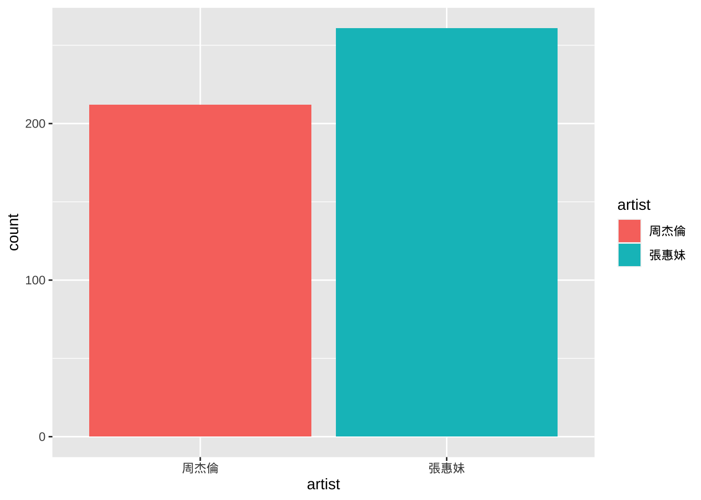
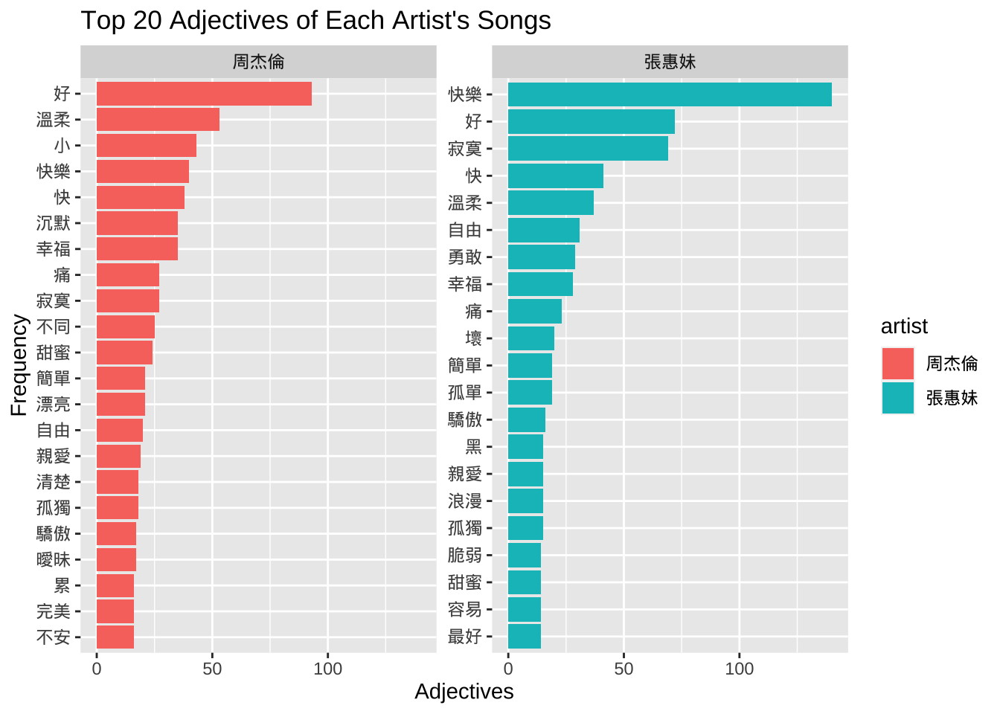
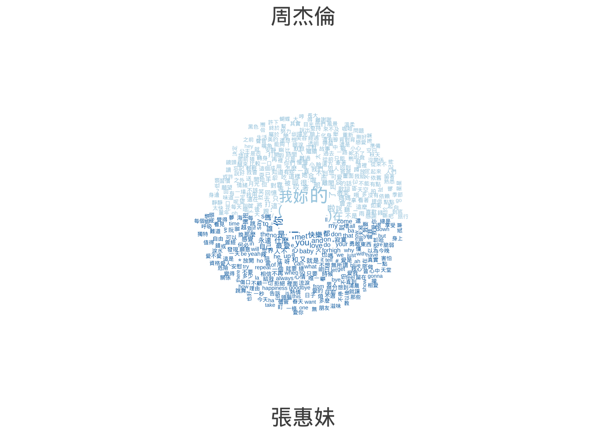
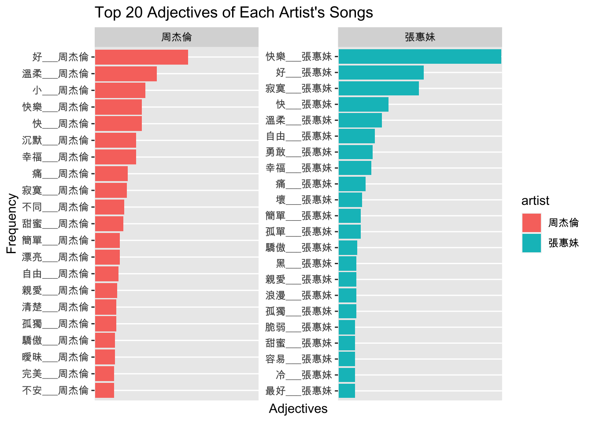

Applications
In this section, we will look at a few more examples of Chinese text processing based on the data set demo_data/song-jay-amei-v1.csv. It is a text collection of songs by Jay Chou and Amei.
Loading Data
corp <- read_csv("demo_data/song-jay-amei-v1.csv")
corpOverview of the Data Set
A quick frequency counts of the songs from each artist:
corp %>%
ggplot(aes(artist, fill=artist)) +
geom_bar()
Initialize jiebaR
Because we are going to use jiebaR for word tokenization, we first initialize the jiebaR models. Here we created two jiebaR objects, one for word tokenization only and the other for parts-of-speech tagging.
# initialize segmenter
## for word segmentation only
my_seg <- worker(bylines = T,
#user = "",
symbol = T)
## for POS tagging
my_seg_pos <- worker(
type = "tag",
bylines = F,
#user = "",
symbol = T
)Even though we have specified a user-defined dictionary in the initialization of the worker(), we can also add add-hoc new words to the model. This can be very helpful when we spot any weird segmentation results in the output.
By default, new_user_word() assigns each new word with a default n tag.
#Add customized terms
temp_new_words <-c("")
new_user_word(my_seg, temp_new_words)[1] TRUEnew_user_word(my_seg_pos, temp_new_words)[1] TRUEQuanteda Framework
First, we perform the tokenization and create the tokens object.
## create tokens based on self-defined segmentation
corp_tokens <- corp$lyric %>%
segment(jiebar = my_seg) %>%
as.tokens
## document-level variables
docvars(corp_tokens) <- corp[, c("artist","lyricist","composer","title","gender")]Case Study 1: Concordances with kwic()
This is an example of processing the Chinese data under Quanteda framework.
Without relying on the Quanteda-native tokenization, we can create the tokens object directly based on the output of the jiebar segment().
With this tokens object, we can perform the concordance analysis with kwic().
kwic(corp_tokens, "快樂")corp_tokens_subset <- tokens_subset(corp_tokens, str_detect(lyricist, "方文山"))
textplot_xray(kwic(corp_tokens_subset, "快樂"),
kwic(corp_tokens_subset, "難過"))
corp_tokens %>%
dfm() %>%
dfm_group ( groups = artist) %>%
dfm_trim(min_termfreq = 10,
min_docfreq = 2,
verbose = F) %>%
textplot_wordcloud(comparison=TRUE,)
Case Study 2: Collocations
## bigrams
textstat_collocations(corp_tokens,
size = 2, min_count = 10) %>%
arrange(-z)Case Study 3: Word Frequency and Wordcloud
The following are examples of processing the Chinese texts under the tidy structure framework.
Recall the three important steps:
- Load the corpus data using
readtext()and create a text-based data frame of the corpus; - Initialize a
jiebaword segmenter usingworker() - Tokenize the text-based data frame into a word-based tidy data frame using
unnest_tokens()
## Create index
corp %>%
mutate(doc_id = row_number()) -> corp_text_df
corp_df_word <- corp_text_df %>%
unnest_tokens(
output = word,
input = lyric,
token = function(x)
segment(x, jiebar = my_seg)
) %>%
group_by(doc_id) %>%
mutate(word_id = row_number()) %>% # create word index within each document
ungroup
corp_df_wordCreating unique indices for your data is very important. In corpus linguistic analysis, we often need to keep track of the original context of the word, phrase or sentence in the concordances. All these unique indices (as well as the source text filenames) would make things a lot easier.
Also, if the metadata of the source documents are available, these unique indices would allow us to connect the tokenized linguistic units to the metadata information (e.g., genres, registers, author profiles) for more interesting analysis.
With a word-based data frame, we can easily create a word frequency list as well as a word cloud to have a quick overview of the word distribution of the corpus.
It should be noted that before creating the frequency list, we need to consider whether to remove unimportant tokens (e.g., stopwords, symbols, punctuation, digits, alphabets.)
## load chinese stopwords
stopwords_chi <- readLines("demo_data/stopwords-ch-jiebar-zht.txt")
## create word freq list
corp_word_freq <- corp_df_word %>%
filter(!word %in% stopwords_chi) %>% # remove stopwords
filter(word %>% str_detect(pattern = "\\D+")) %>% # remove words consisting of digits
count(word) %>%
arrange(desc(n))
library(wordcloud2)
corp_word_freq %>%
filter(n > 20) %>%
filter(nchar(word) >= 2) %>% ## remove monosyllabic tokens
wordcloud2(shape = "pentagon", size = 0.3)Case Study 4: Patterns
In this case study, we are looking at a more complex example. In corpus linguistic analysis, we often need to extract a particular pattern from the texts. In order to retrieve the target patterns at a high accuracy rate, we often need to make use of the additional annotations provided by the corpus.
The most often-used information is the parts-of-speech tags of words. So here we demonstrate how to enrich our corpus data by adding POS tags information to our current tidy corpus design.
Our steps are as follows:
- Initialize
jiebarobject, which performs not only word segmentation but also POS tagging; - Create a self-defined function to word-seg and pos-tag each text and combine all tokens,
word/tag, into a long string for each text; - With the text-based
apple_df, create a new column, which includes the enriched version of each text, usingmutate()
# define a function to word-seg and pos-tag a text
tag_text <- function(x, jiebar) {
segment(x, jiebar) %>% ## tokenize
paste(names(.), sep = "/", collapse = " ") ## reformat output
}# demo of the function `tag_text()`
tag_text(corp$lyric[1], my_seg_pos)[1] "若非/c 狠下/d 心/n 拿/v 什麼/r 想/v 妳/zg \n/x 想成/v 了/ul 風雨/n /x /x 對不起/l \n/x 保護/v 一顆/m 心看/x 多/m 了/ul 烏雲/nr \n/x 兩忘/x 曾經/d 裡/zg /x 不/d 怨/v 妳/zg \n/x /x \n/x 心中/s 有/v 心語/n /x /x /x /x 妳/zg 我/r 是/v 雙影/n /x \n/x /x 一半/m 無情/n /x /x 另一半/d 深情/n \n/x /x 貪/v 一點/m 愛/zg 什麼/r 痛/a 也/d 允許/v /x \n/x /x 用/p 懷疑/v 交換/v /x /x /x 秘密/n \n/x 寵愛/v 和/c 被忘/x /x /x 在/p 心中/s 交談/v /x (/x 說來/v 迷惘/a )/x \n/x 妳/zg 作證/v 我/r 的/uj 冷暖/an /x /x 悲歡/v (/x 夢/n 短路/n 長/zg )/x \n/x 妳/zg 拉/v 我/r 的/uj 手繡/n 一件/m 孤單/a (/x 絲綢/n 堆/v 了/ul 月光/n )/x \n/x 說/zg 用來/v 取暖/v /x 誰/zg 敢/v \n/x 命/n 在/p 誰/zg 命裡/x /x /x /x 愛恨/a 是/v 雙影/n \n/x 一端/m 美麗/ns /x /x 另一端/i 無語/nz \n/x 遠遠/d 走來/v 沒有/v 字/n 的/uj 未來/t \n/x 被/p 時間/n 教會/n /x /x 也許/d \n/x 情斷/x 留情/v 意/n /x /x 忘記/v 是/v 雙影/n \n/x 一天/m 冷淡/a 另/r 一天/m 想起/v \n/x 但願/v 我們/r 永遠/d 走/v 在/p 光裡/x \n/x 這/zg 一生/m 如此/c /x /x 多雲/nr \n/x 這/zg 一生/m 從此/c /x /x 無/v 雲/ns \n/x 感謝/v \n/x 好/a 青年/t \n/x 提供/v 歌詞/n"# apply `tag_text()` function to each text
corp_anno <- corp %>%
mutate(lyric_tag = map_chr(lyric, tag_text, my_seg_pos))
corp_annoNow we have obtained an enriched version of the texts, we can make use of the POS tags for construction analysis. Let’s look at the example of X + 男人/女人 Construction.
The data retrieval procedure is now very straightforward: we only need to create a regular expression that matches our construction and go through the enriched version of the texts (i.e., text_tag column in apple_df) to identify these matches with unnest_tokens().
1.Define a regular expression \\b被/p\\s([^/]+/[^\\s]+\\s)*?[^/]+/v for BEI-Construction, i.e., 被 + VERB
2.Use unnest_tokens() and str_extract_all() to extract target patterns and create a pattern-based data frame.
# define regex patterns
#pat <- "\\s[^/]+/a[^\\s]*\\s[男女]./n"
pat <- "[^/\\s]+/a\\b"
# extract patterns from corp
corp_anno %>%
#select(-lyric) %>% # `text` is the column with original raw texts
unnest_tokens(
output = pat,
## pattern name
input = lyric_tag,
## original base linguistic unit
token = function(x)
str_extract_all(x, pattern = pat)
) -> result
result %>%
mutate(word = str_replace_all(pat, "/.+$","")) %>%
group_by(artist) %>%
count(word, sort = T) %>%
top_n(20) %>% ungroup %>%
arrange(artist, -n) -> result_df
result_df %>%
mutate(word = reorder_within(word, n, artist)) %>%
ggplot(aes(word, n, fill=artist)) +
geom_bar(stat="identity")+ coord_flip()+
facet_wrap(~artist,scales = "free_y") +
scale_y_reordered() +
theme(text= element_text(family="Arial Unicode MS")) +
labs(x = "Frequency", y = "Adjectives",
title="Top 20 Adjectives of Each Artist's Songs")
Case Study 5: Lexical Bundles
N-grams Extraction
With word boundaries, we can also analyze the recurrent multiword units in Chinese news. Here let’s take a look at the recurrent four-grams in our Chinese corpus.
As the default n-gram tokenization in unnest_tokens(..., token = "ngrams") only works with the English data, we need to define our own ngram tokenization functions.
The Chinese ngram tokenization function should:
- tokenize each text into word tokens
- create a set of ngrams from the word tokens of each text
## self defined ngram tokenizer
tokenizer_ngrams <-
function(texts,
jiebar,
n = 2 ,
skip = 0,
delimiter = "_") {
texts %>%
segment(jiebar) %>% ## word tokenization
as.tokens %>% ## list to tokens
tokens_ngrams(n, skip, concatenator = delimiter) %>% ## ngram tokenization
as.list ## tokens to list
}In the above self-defined ngram tokenizer, we make use of tokens_ngrams() in quanteda, which creates a set of ngrams from already tokenized text objects, i.e., tokens. Because this function requires a tokens object as the input, we need to do the class conversion via as.tokens() and as.list().
Take a look at the following examples for a quick overview of tokens_ngrams():
sents <- c("Jack and Jill went up the hill to fetch a pail of water",
"Jack fell down and broke his crown and Jill came tumbling after")
sents_tokens <- tokens(sents) ## English supported
tokens_ngrams(sents_tokens, n = 2, skip = 0)Tokens consisting of 2 documents.
text1 :
[1] "Jack_and" "and_Jill" "Jill_went" "went_up" "up_the" "the_hill"
[7] "hill_to" "to_fetch" "fetch_a" "a_pail" "pail_of" "of_water"
text2 :
[1] "Jack_fell" "fell_down" "down_and" "and_broke"
[5] "broke_his" "his_crown" "crown_and" "and_Jill"
[9] "Jill_came" "came_tumbling" "tumbling_after"tokens_ngrams(sents_tokens, n = 2, skip = 1)Tokens consisting of 2 documents.
text1 :
[1] "Jack_Jill" "and_went" "Jill_up" "went_the" "up_hill"
[6] "the_to" "hill_fetch" "to_a" "fetch_pail" "a_of"
[11] "pail_water"
text2 :
[1] "Jack_down" "fell_and" "down_broke" "and_his"
[5] "broke_crown" "his_and" "crown_Jill" "and_came"
[9] "Jill_tumbling" "came_after" tokens_ngrams(sents_tokens, n = 5, skip = 0)Tokens consisting of 2 documents.
text1 :
[1] "Jack_and_Jill_went_up" "and_Jill_went_up_the" "Jill_went_up_the_hill"
[4] "went_up_the_hill_to" "up_the_hill_to_fetch" "the_hill_to_fetch_a"
[7] "hill_to_fetch_a_pail" "to_fetch_a_pail_of" "fetch_a_pail_of_water"
text2 :
[1] "Jack_fell_down_and_broke" "fell_down_and_broke_his"
[3] "down_and_broke_his_crown" "and_broke_his_crown_and"
[5] "broke_his_crown_and_Jill" "his_crown_and_Jill_came"
[7] "crown_and_Jill_came_tumbling" "and_Jill_came_tumbling_after"# examples
texts <- c("這是一個測試的句子",
"這句子",
"超短句",
"最後一個超長的句子測試")
tokenizer_ngrams(
texts = texts,
jiebar = my_seg,
n = 2,
skip = 0,
delimiter = "_"
)$text1
[1] "這是_一個" "一個_測試" "測試_的" "的_句子"
$text2
[1] "這_句子"
$text3
[1] "超短_句"
$text4
[1] "最後_一個" "一個_超長" "超長_的" "的_句子" "句子_測試"tokenizer_ngrams(
texts = texts,
jiebar = my_seg,
n = 2,
skip = 1,
delimiter = "_"
)$text1
[1] "這是_測試" "一個_的" "測試_句子"
$text2
character(0)
$text3
character(0)
$text4
[1] "最後_超長" "一個_的" "超長_句子" "的_測試" tokenizer_ngrams(
texts = texts,
jiebar = my_seg,
n = 5,
skip=0,
delimiter = "/"
)$text1
[1] "這是/一個/測試/的/句子"
$text2
character(0)
$text3
character(0)
$text4
[1] "最後/一個/超長/的/句子" "一個/超長/的/句子/測試"With the self-defined ngram tokenizer, we can now perform the ngram tokenization on our Chinese corpus:
We transform the text-based data frame into an ngram-based data frame using
unnest_tokens(...)with the self-defined tokenization functiontokenizer_ngrams()We remove empty and unwanted n-grams entries:
- Empty ngrams due to short texts
- Ngrams spanning punctuations, symbols, or paragraph breaks
- Ngrams including alphanumeric characters
## from text-based to ngram-based
system.time(
corp_text_df %>%
unnest_tokens(
ngram,
lyric,
token = function(x)
tokenizer_ngrams(
texts = x,
jiebar = my_seg,
n = 4,
skip = 0,
delimiter = "_"
)
) -> corp_ngram
) ## end system.time user system elapsed
0.590 0.016 0.332 ## remove unwanted ngrams
corp_ngram2 <- corp_ngram %>%
filter(nzchar(ngram)) %>% ## empty strings
filter(!str_detect(ngram, "[^\u4E00-\u9FFF_]")) ## remove unwanted ngramsIn the above regular expression, the Unicode range [\u4E00-\u9FFF] includes frequently used Chinese characters. Therefore, the way we remove unwanted ngrams is to identify all the ngrams that include non-Chinese characters that are outside of this Unicode range (as well as the delimiter _).
For more information related to the Unicode range for the punctuations in CJK languages, please see this SO discussion thread.
Frequency and Dispersion
As we have discussed in Chapter ??, a multiword unit can be defined based on at least two important distributional properties (See Biber, Conrad, and Cortes (2004)):
- The frequency of the whole multiword unit (i.e., frequency)
- The number of texts where the multiword unit is observed (i.e., dispersion)
Now that we have the ngram-based DF, we can compute their token frequencies and document frequencies in the corpus using the normal data manipulation tricks.
We set cut-offs for four-grams at: dispersion >= 5 (i.e., four-grams that occur in at least five different documents)
system.time(
corp_ngram_dist <- corp_ngram2 %>%
group_by(ngram) %>%
summarize(freq = n(), dispersion = n_distinct(doc_id)) %>%
filter(dispersion >= 3)
) #end system.time user system elapsed
0.706 0.005 0.712 Please take a look at the four-grams, arranged by frequency and dispersion respectively:
# arrange by dispersion
corp_ngram_dist %>%
arrange(desc(dispersion)) %>% head(10)# arrange by freq
corp_ngram_dist %>%
arrange(desc(freq)) %>% head(10)We can also look at four-grams with particular lexical words:
corp_ngram_dist %>%
filter(str_detect(ngram, "我")) %>%
arrange(desc(dispersion))corp_ngram_dist %>%
filter(str_detect(ngram, "你")) %>%
arrange(desc(dispersion))Recap
Tokenizations are complex in Chinese text processing. Many factors may need to be taken into account when determining the right tokenization method. In particular, several important questions may be relevant to Chinese text tokenization:
- Do you need the parts-of-speech tags of words in your research?
- What is the base unit you would like to work with? Texts? Paragraphs? Chunks? Sentences? N-grams? Words?
- Do you need non-word tokens such as symbols, punctuation, digits, or alphabets in your analysis?
Your answers to the above questions should help you determine the most effective structure of the tokenization methods for your data.
感謝聆聽!